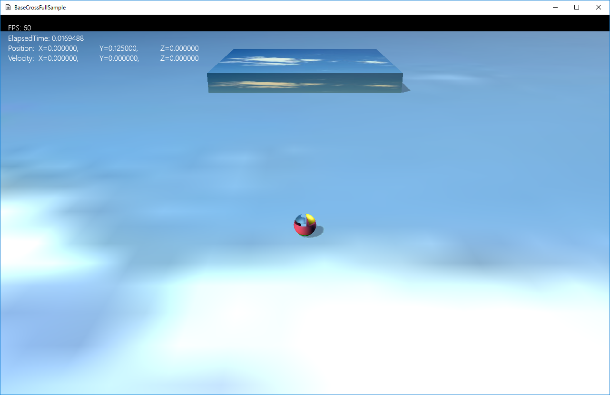
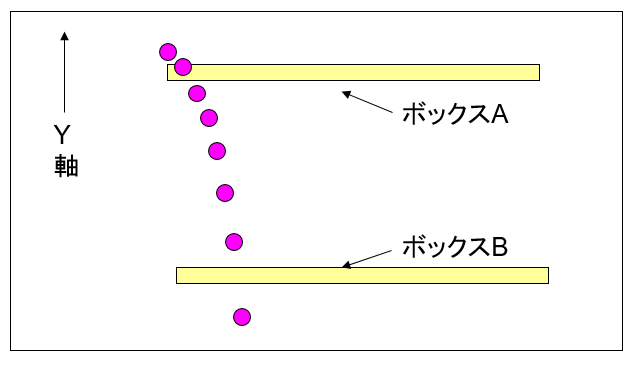
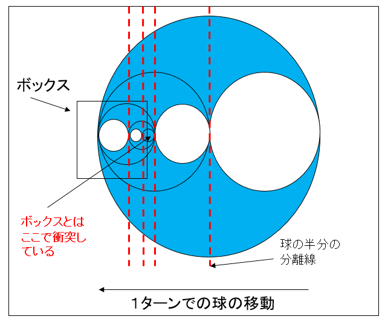
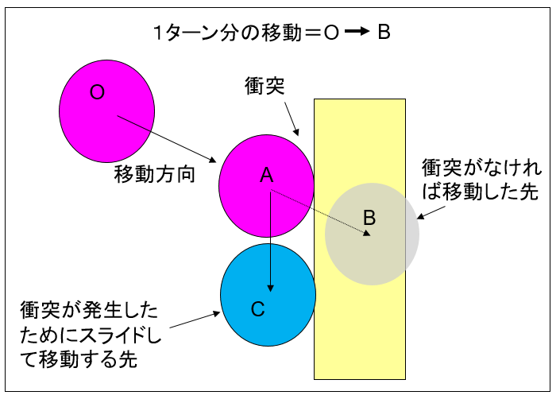
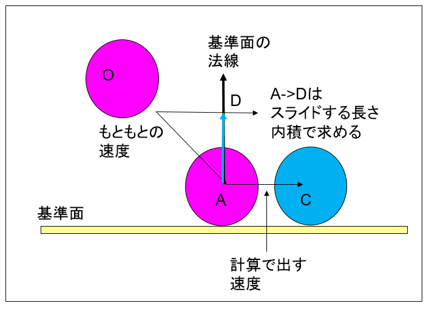

３．Update系
３０４．衝突判定を考える
BaseCrossには衝突判定機能がついています。ここではその機能を説明する前に衝突判定とはという基本的な部分から説明します。ゲームには何かと何かがぶつかるという処理はほぼ必須の機能と言えます。古くはブロック崩しやテニスも球が何かと衝突するのを基本にゲームが作成されてきました。
その後、ゲームの進化とともにアクションRPGなどにおける敵との戦いやアイテムの取得などの行動にも衝突判定は必須なものと言えます。
また、衝突判定は２Ｄと３Ｄではかなり違います。ここでは３Ｄの衝突判定について述べるとともに、問題点も明らかにします。
まずFullSample304を実行してみましょう。以下のような画面が出てきます。

図0304a
コントローラを動かすとプレイヤーが移動します。しかし、奥のボックスに当たっても素通りしてしまいます。この項では、このプレイヤーに、簡単な衝突判定処理を実装してみます。
境界ボリューム
例えばプレイヤーなどのモデルの形状をそのまま判定に使うのは、リスクが大きすぎます。そのため、多くの場合境界ボリュームという比較的単純な形に見立てて、判定します。そのような形状を境界ボリュームといいます。BaseCrossでは球体、直方体、カプセルの境界ボリュームを扱うことができます。
まずサンプルのプレイヤーの境界ボリュームは球です。球のデータ構造は以下のようになります。
struct SPHERE {
///中心点の座標
Vec3 m_Center;
///半径
float m_Radius;
//以下略
};
ですから、球対球の衝突は以下のように記述できます。
static bool SPHERE_SPHERE(const SPHERE& sp1, const SPHERE& sp2){
bsm::Vec3 d = sp1.m_Center - sp2.m_Center;
float dist2 = bsm::dot(d,d);
float radiussum = sp1.m_Radius + sp2.m_Radius;
return dist2 <= radiussum * radiussum;
}
OBBのデータ構造は以下のようになります。
struct OBB{
// 中心点の座標
bsm::Vec3 m_Center;
// XYZ の各座標軸の傾きを表す方向ベクトル
bsm::Vec3 m_Rot[3];
// OBB の各座標軸に沿った長さの半分（中心点から面までの長さ）
bsm::Vec3 m_Size;
//以下略
};
さて、SPHEREとOBBの衝突は以下のようになります。
//--------------------------------------------------------------------------------------
/*!
@brief pointから見たOBBの最近接点を得る
@param[in] point 基準点
@param[in] obb OBB
@param[out] retvec 最近接点を返す参照
@return なし
*/
//--------------------------------------------------------------------------------------
static void ClosestPtPointOBB(const bsm::Vec3& point, const OBB& obb, bsm::Vec3& retvec){
bsm::Vec3 d = point - obb.m_Center;
retvec = obb.m_Center;
float dist;
for(int i = 0; i < 3; i++)
{
dist = bsm::dot(d,obb.m_Rot[i]);
if(dist > obb.m_Size[i])
{
dist = obb.m_Size[i];
}
if(dist < -obb.m_Size[i])
{
dist = -obb.m_Size[i];
}
retvec += dist * obb.m_Rot[i];
}
}
//--------------------------------------------------------------------------------------
/*!
@brief 球とOBBとの衝突判定
@param[in] sp 球
@param[in] obb OBB
@param[out] retvec 最近接点が代入される参照
@return 衝突していればtrue
*/
//--------------------------------------------------------------------------------------
static bool SPHERE_OBB(const SPHERE& sp, const OBB& obb, bsm::Vec3& retvec){
ClosestPtPointOBB(sp.m_Center,obb,retvec);
bsm::Vec3 v = retvec - sp.m_Center;
return bsm::dot(v,v) <= sp.m_Radius * sp.m_Radius;
}
SPHERE_OBB()関数は3つ目のパラメータbsm::Vec3& retvecに最近接点を返します。ここではSPHEREとOBBの最近接点ということになります。
この最近接点は、衝突後の処理を実装するのに非常に便利な値となります。
まえに紹介したSPHERE_SPHERE()関数やSPHERE_OBB()関数などは、BaseCrossのライブラリ中のTransHelper.hに記述されています（HitTest構造体のスタティック関数）ので、これらの関数まで新規に記述する必要はありません。
衝突判定を記述する
それでは、FullSample304のPlayer::OnUpdate2()関数に以下のように記述します。
void Player::OnUpdate2() {
//Transformコンポーネントを取り出す
auto PtrTrans = GetComponent<Transform>();
//SPHEREの作成
SPHERE sp;
sp.m_Center = PtrTrans->GetPosition();
sp.m_Radius = 0.125f;
//Rigidbodyを取り出す
auto PtrRigid = GetComponent<Rigidbody>();
//現在の速度を取り出す
Vec3 Velo = PtrRigid->GetVelocity();
//ステージ上のオブジェクトの配列を取得
auto& ObjectVec = GetStage()->GetGameObjectVec();
for (auto& v : ObjectVec) {
if (v->FindTag(L"FixedBox")) {
//FixedBoxというタグを持っているオブジェクトを検証
auto PtrBoxTrans = v->GetComponent<Transform>();
//ボックスのワールド行列を使ってOBBを作成
OBB obb(Vec3(1.0f, 1.0f, 1.0f), PtrBoxTrans->GetWorldMatrix());
//最近接点の変数
Vec3 Ret;
if (HitTest::SPHERE_OBB(sp, obb, Ret)) {
//衝突した(最近接点から法線を計算)
Vec3 Normal = sp.m_Center - Ret;
//正規化
Normal.normalize();
//反発を計算
Velo = XMVector3Reflect(Velo, Normal);
//反発した速度を設定
PtrRigid->SetVelocity(Velo);
//ボックスの領域からプレイヤーを追い出す
Vec3 NewPos = Ret + Normal * 0.125f;
PtrTrans->ResetPosition(NewPos);
}
}
}
}
衝突判定の問題点
では、ボックスを正面を向いてAボタンを押してみましょう。白いボールがプレイヤーから飛び出します。白いボールがボックスに当たると、時には反発し、時には通り抜けるという不安定な動きになると思います。
まさにこれこそ衝突判定の問題点となります。
方向を持ちながら落下する球の行く先にボックスがあったとします。以下の図のような感じです。

図0304b
ゲーム上で何かが動くということはアニメーションをするということです。それはOnUpdateやOnDrowが呼ばれるタイミングで、約60分の1秒に一度更新や描画されます。当然、その更新や描画は厳密には連続しているものではなくて、パラパラ漫画のようなアニメーションを行っているわけです。そのため上図のようにボックス1では球とボックスは衝突するのですが、ボックス2では衝突せずにすり抜けてしまいます。
これをトンネル現象といいます。トンネル現象を避けるために、以下のような考え方で判定します。
トンネル現象を避ける
まず、以下の図を見てください。

図0304c
赤い球は右から左に移動してます。1ターン内のどこかのタイミングでボックスと衝突します。ということは、大きな青い球がボックスと衝突するのと同じ意味になります。つまり、球の移動も含めた大きな球を考え、まず、その大きな球とボックスの判定を行います。
そして、その大きな球とボックスが衝突していたら、以下のように、球を直径を半分にした大きさに分割していきます。

図0304d
それを繰り返していくと、判別する球の半径が限りなく小さくなります。ある一定の大きさ以下になったら、その場所を衝突点として、衝突点が導かれるまでの分割数を求め、それを時間に換算します。1ターンは約60分の1秒ですから、例えば、480分の1秒後に衝突しているのが算出されるわけです。正確には衝突する直前を算出するわけですが、その関数は以下のようになります。以下は球対ボックス（OBB）の判定です。
//--------------------------------------------------------------------------------------
/*!
@brief Sphereと動かないObbの衝突判定
@param[in] SrcSp Srcの球
@param[in] SrcVelocity ソース速度
@param[in] DestObb DestのOBB
@param[in] StartTime 開始時間
@param[in] EndTime 終了時間
@param[out] HitTime ヒット時間
@return 衝突していればtrue
*/
//--------------------------------------------------------------------------------------
static bool CollisionTestSphereObb(const SPHERE& SrcSp, const bsm::Vec3& SrcVelocity,
const OBB& DestObb,
float StartTime, float EndTime, float& HitTime){
const float m_EPSILON = 0.005f;
SPHERE SrcSp2;
float mid = (StartTime + EndTime) * 0.5f;
SrcSp2.m_Center = SrcSp.m_Center + SrcVelocity * mid;
SrcSp2.m_Radius = (mid - StartTime) * bsm::length(SrcVelocity) + SrcSp.m_Radius;
bsm::Vec3 RetVec;
if (!HitTest::SPHERE_OBB(SrcSp2, DestObb, RetVec)){
return false;
}
if (EndTime - StartTime < m_EPSILON){
HitTime = StartTime;
return true;
}
if (CollisionTestSphereObb(SrcSp, SrcVelocity, DestObb, StartTime, mid, HitTime)){
return true;
}
return CollisionTestSphereObb(SrcSp, SrcVelocity, DestObb, mid, EndTime, HitTime);
}
この関数は再帰呼び出しをする関数として作成されています。どんどんネストが深くなる部分を再帰で表現しています。
ではこの処置を白いボールにあてはめてみましょう。
void AttackBall::OnUpdate2() {
//Transformコンポーネントを取り出す
auto PtrTrans = GetComponent<Transform>();
//SPHEREの作成
SPHERE sp;
sp.m_Center = PtrTrans->GetPosition();
sp.m_Radius = 0.05f;
//Rigidbodyを取り出す
auto PtrRigid = GetComponent<Rigidbody>();
//現在の速度を取り出す
Vec3 Velo = PtrRigid->GetVelocity();
//前回のターンからの時間
float ElapsedTime = App::GetApp()->GetElapsedTime();
//ステージ上のオブジェクトの配列を取得
auto& ObjectVec = GetStage()->GetGameObjectVec();
for (auto& v : ObjectVec) {
if (v->FindTag(L"FixedBox")) {
//FixedBoxというタグを持っているオブジェクトを検証
auto PtrBoxTrans = v->GetComponent<Transform>();
//ボックスのワールド行列を使ってOBBを作成
OBB obb(Vec3(1.0f, 1.0f, 1.0f), PtrBoxTrans->GetWorldMatrix());
float HitTime;
if (HitTest::CollisionTestSphereObb(sp, Velo, obb, 0, ElapsedTime, HitTime)) {
//ターン時間内のどこかで衝突した
//ヒットする直前まで戻る
//1ターン前の位置を取得
auto BeforePos = PtrTrans->GetBeforePosition();
//ヒット位置の計算
auto HitPos = BeforePos + Velo * HitTime;
sp.m_Center = HitPos;
Vec3 Ret;
//最近接点を得る
HitTest::SPHERE_OBB(sp, obb, Ret);
//衝突した(最近接点から法線を計算)
Vec3 Normal = sp.m_Center - Ret;
//正規化
Normal.normalize();
//ボックスの領域からプレイヤーを追い出す
//HitPosを新しい位置にすると、少しずれるので以下で求める
Vec3 NewPos = Ret + Normal * 0.05f;
float OtherTime = ElapsedTime - HitTime;
//衝突後の余った時間をスライド処理
if (OtherTime > 0.0f) {
//HitTime以降の残った時間はスライドさせる
//thisと法線から直行線の長さ（内積で求める）
float Len = dot(Velo, Normal);
//その長さに伸ばす
Vec3 Contact = Normal * Len;
//スライドする方向は現在のベクトルから引き算
Vec3 SledeVelo = Velo - Contact;
NewPos += SledeVelo * OtherTime;
}
//新しい位置を設定（ResetPositionを使用）
PtrTrans->ResetPosition(NewPos);
//反発を計算
Velo = XMVector3Reflect(Velo, Normal);
//反発した速度を設定
PtrRigid->SetVelocity(Velo);
}
}
}
}
float HitTime;
if (HitTest::CollisionTestSphereObb(sp, Velo, obb, 0, ElapsedTime, HitTime)) {
そして
//ターン時間内のどこかで衝突した
//ヒットする直前まで戻る
//1ターン前の位置を取得
auto BeforePos = PtrTrans->GetBeforePosition();
//ヒット位置の計算
auto HitPos = BeforePos + Velo * HitTime;
sp.m_Center = HitPos;
//最近接点を得る
HitTest::SPHERE_OBB(sp, obb, Ret);
//衝突した(最近接点から法線を計算)
Vec3 Normal = sp.m_Center - Ret;
//正規化
Normal.normalize();
//ボックスの領域からプレイヤーを追い出す
//HitPosを新しい位置にすると、少しずれるので以下で求める
Vec3 NewPos = Ret + Normal * 0.05f;
続く処理は、以下の図を見てください。

図0304e
これは、ある移動ターンで、球ＯがＢ地点まで移動しようとしていて時にＡ地点で衝突した場合のケースを示しています。1ターンは約60分の1秒ですがそのどこかの位置で衝突したわけです。この時物体はどう動くでしょうか？
いろんな処理があると思います。例えばＡ地点に制止させるという方法もあるでしょう。そして次のターンで反発なりの新しい速度を発生させる方法です。また即座に反発させるという方法もあるでしょう。
今回の処理は、この衝突後の残った時間をスライドさせるといいう方法をとってます。上図のC地点に移動させる方法です。
ではC地点へのスライドをどう計算すればいいでしょうか？計算をわかりやすくするために、下の図を見てください。

図0304f
まず、スライドするスピードを考えます。速度（Vecocity）は方向とスピードを両方持つベクトルですから、そのスピードです。これは、もともとのVelicityを衝突面（基準面）の法線への内積で求められます。
float ADの長さ = Dot(ベクトルAO,正規化された基準面の法線);
Vec3 ベクトルAD = 正規化された基準面の法線 * ADの長さ;
Vec3 ベクトルAC = ベクトルAD - ベクトルAO;
ベクトルAO + ベクトルAC = ベクトルAD;
さてコードに戻ります。
float OtherTime = ElapsedTime - HitTime;
//衝突後の余った時間をスライド処理
if (OtherTime > 0.0f) {
//HitTime以降の残った時間はスライドさせる
//thisと法線から直行線の長さ（内積で求める）
float Len = dot(Velo, Normal);
//その長さに伸ばす
Vec3 Contact = Normal * Len;
//スライドする方向は現在のベクトルから引き算
Vec3 SledeVelo = Velo - Contact;
NewPos += SledeVelo * OtherTime;
}
最後に、
//新しい位置を設定（ResetPositionを使用）
PtrTrans->ResetPosition(NewPos);
その後の
//反発を計算
Velo = XMVector3Reflect(Velo, Normal);
//反発した速度を設定
PtrRigid->SetVelocity(Velo);
//スライドした速度を設定
PtrRigid->SetVelocity(SledeVelo);
さてこの項は衝突判定の考え方について説明しました。次項ではBaseCrossの衝突判定コンポーネントについて述べます。